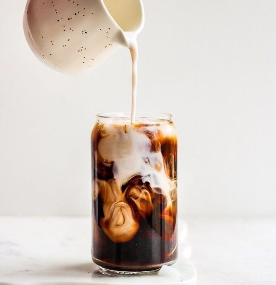

O café, para seu consumo, necessita obrigatoriamente ser torrado.
Antes de torrados, os grãos são selecionados, passam por triagem e calibragem.
O processo de torra consiste em submeter o grão à elevação progressiva e
rápida da temperatura, fazendo com que sua umidade interna chegue a 3%
To falando qualquer coisa aqui.
Aproveito que estou falando qualquer coisa, estou gostando muito do curso.
Caso você queira torrar os grãos em sua própria casa, você precisará ter em mãos uma assadeira com pequenos furos no fundo,
que não permitam a passagem dos grãos, e colocá-los sem sobrepor nenhum,
mantendo todos em uma mesma camada. Após isso, basta deixar os grãos no processo por cerca
de 15 a 20 minutos no forno à 230 ºC, para que seja feita uma boa torra do café,
conservando seus sabores naturais.
Bla bla bla bla
O café, para seu consumo, necessita obrigatoriamente ser torrado. Antes de torrados, os grãos são selecionados, passam por triagem e calibragem.
O processo de torra consiste em submeter o grão à elevação progressiva e rápida da temperatura, fazendo com que sua umidade interna chegue a 3% To falando qualquer coisa aqui.
Aproveito que estou falando qualquer coisa, estou gostando muito do curso.
Caso você queira torrar os grãos em sua própria casa, você precisará ter em mãos uma assadeira com pequenos furos no fundo, que não permitam a passagem dos grãos, e colocá-los sem sobrepor nenhum, mantendo todos em uma mesma camada. Após isso, basta deixar os grãos no processo por cerca de 15 a 20 minutos no forno à 230 ºC, para que seja feita uma boa torra do café, conservando seus sabores naturais. Bla bla bla bla